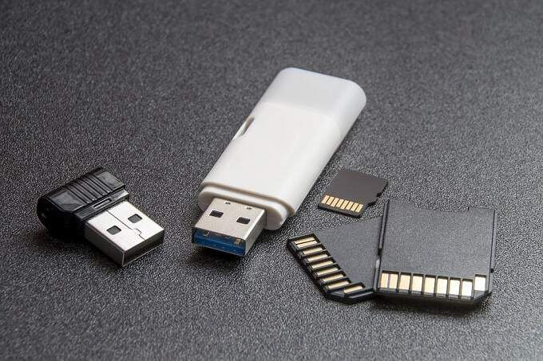

What are Portable Applications?
A portable application is defined as a piece of software that is used on a computer system without having to be installed on the system itself. This is due to the application not writing data to the system files and instead, reading and writing all files to the folder that the application is located in. Portable applications can be stored on a variety of storage devices and are able to run from such devices. Since the applications do not need to be installed on the device that it is being run from, there is also the possibility of running the application on different computer systems. This behaviour is what gives the apps themselves the distinction of being portable, as you have the ability to store the apps on a portable storage device and use them on any computer system you may have access to by running them from the storage device directly.
Have You Ever Used These?
There are many applications that we may use on a daily basis that we did not even know were portable. These apps can range from document and text editors, media viewing apps, computer games and even console emulators. below are some of the applications that you may already be familiar with.